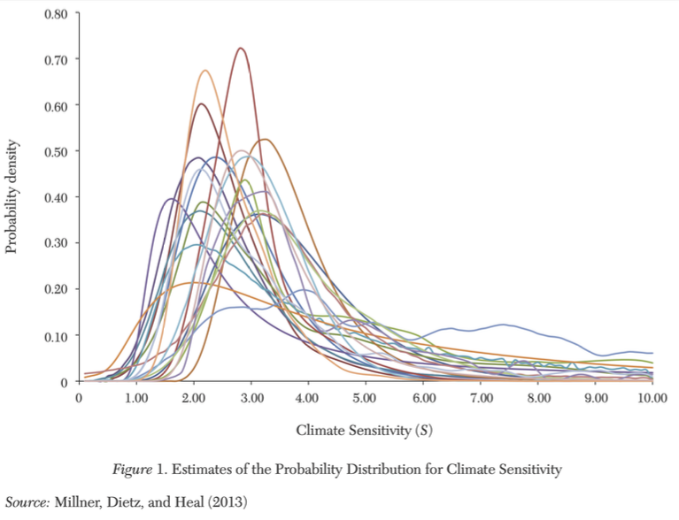

2.5 – what don’t we know about climate change?
Note: development in progress…
overview
There a three major challenges to choosing the correct price on CO2 emissions:
- What is the correct discount rate?
- How to measure damages from CO2 emissions?
- How to account for uncertainty in climate change?
Specifically, how should we incorporate low-probability, high damage scenarios into our measures of the economic consequences of climate change and our policy decisions?
risk aversion
As a society, we are generally risk averse, which means we need to be compensated (via a “risk premium”) to be indifferent between taking a gamble and accepting a “sure thing.” In other words: with risk-aversion, we would be willing-to-pay for a climate risk reduction.
- Risk-aversion can lead to a larger estimate of the SCC because of potential climate catastrophes
- Also provides justification for incorporating the value of reducing uncertainty into climate policy decisions.
the precautionary principle
The precautionary principle states: “Where there are threats of serious or irreversible damage, lack of full scientific certainty shall not be used as a reason for postponing cost- effective measures to prevent environmental degradation.”
- Adopted by the UN Framework Convention on Climate Change (UNFCCC).
- Uncertainty about climate damages does not serve as an argument to delay action
- In the face of great uncertainty, a precautionary approach might even result in more stringent emissions-reductions targets or adaptational responses.
- Mitigation and adaptation measures should be implemented before full information is available and uncertainties regarding the scope and timing of climate change are resolved.
The precautionary principle is inconsistent with standard benefit-cost analysis. Basic idea: it’s better to be safe than sorry, but how safe is safe enough?
risk management and climate change
If climate damages are small, but will be worse when economy is strong \(\implies\) discount rates should be higher (because climate change will be “easier” to live with)
If climate damages are large and correlated with economic downturns \(\implies\) discount rates should be low
If there is a 5-10% chance of a climate catastrophe that crashes economies and alters life as we know it? \(\implies\) lower discount rates to avoid financial collapse.
- What would we be willing to pay to avoid a 2008 financial crisis? The COVID pandemic?
Investors need to be paid to take on more risk (i.e., to make them willing to buy a risky asset rather than a low-risk bond). If climate poses potentially catastrophic risk, then the “low-risk bond” of avoiding that risk is mitigating carbon emissions now.
- This thinking can lead to very small or even negative discount rates.
Mitigating GHGs is like buying insurance against a catastrophic event.
fat tails
Recall that equilibrium climate sensitivity (ECS) is the change in global mean surface temperature that would result from a doubling of atmospheric \(CO_2\) concentrations. ECS is a key parameter in climate models. Pre-industrial levels of CO2 concentrations were roughly 280 ppm. Current levels are around 420 ppm. So, we are roughly halfway to a doubling of CO2 concentrations. If GHG emissions continue on their current trajectory, we will reach a doubling of CO2 concentrations by roughly 2050. ECS is useful because it tells us how global mean surface temperature will change in response to GHG concentrations in the atmosphere.
Regarding ECS, IPCC AR6 states: “Improved knowledge of climate processes, paleoclimate evidence and the response of the climate system to increasing radiative forcing gives a best estimate of equilibrium climate sensitivity of 3°C with a narrower range compared to AR5.” And, “…the very likely range of equilibrium climate sensitivity is between 2°C (high confidence) and 5°C (medium confidence).”
In IPCC parlance, “very likely” means 90-100% likelhood. So, the IPCC is saying that there is a 90% probability that climate sensitivity is between 2°C and 5°C. But, there is up to a 10% chance that climate sensitivity is greater than 5°C. This is a fat tail. A fat tail is a probability distribution that has a higher probability of extreme events than a normal distribution. The ECS distribution is fat-tailed because the likelihood of a very high ECS is greater than a normal distribution would predict. In Figure 1, which shows estimates of the ECS distribution from various studies, the probability of exceeding 5°C is roughly 10% (which is represented by the “thickness” of the right tail of the distribution).

Of course, the IPCC’s best guess is that ECS will be roughly 3°C. But, there is a non-trivial chance that ECS will be much higher than 3°C. This fat tail is concerning because we really don’t know what the economic consequences of global climate change on such a scale might be. The consequences could be catastrophic. The likelihood of getting into a car accident or having your home burn down is low—lower than 10% each year—but we are required to take out insurance policies against these low-probability, high-cost events.
In their book Climate Shock, Wagner and Weitzman summarize this point nicely (although their quote is based on slightly out-of-date numbers): “We don’t know the full implications of an eventual 6°C (11°F) temperature change. We can’t know. It’s a blind planetary gamble. Devastating home fires, car crashes, and other personal catastrophes are almost always much less likely than 10 percent. And still, people take out insurance to cover against these remote possibilities, or are even required to do so by laws that hope to avoid pushing these costs onto society. Risks like this on a planetary scale should not—must not—be pushed onto society.”
If the distribution of damages from a given level of warming has a “fat tail” (damages don’t go to zero probability fast enough), the optimal policy prescription may change dramatically.
Weitzman’s “dismal theorem”
As a result of fat tails, Weitzman (2009) argues that the expected value of climate damages is infinite. This is because the expected value of climate damages is the sum of the probability of each level of climate damages multiplied by the level of climate damages. If there is a non-zero probability of catastrophic climate damages (e.g., that could dramatically affect the global economy and generate substantial loss of human life), then the expected value of climate marginal damages could be infinite. This is Weitzman’s “dismal theorem.” In other words, if the probability of catastrophic climate damages is non-zero, then the SCC—that is, the marginal benefit of reducing one ton of GHG emissions—would be infinite. This is clearly an absurd result. But, it is a consequence of fat tailed climate risk.
The dismal theorem is effectively the precautionary principle in action: When a potentially serious risk exists, but significant scientific uncertainty also exists, action should not wait until all uncertainty is resolved.
tipping points
A tipping point is a threshold (point) that, when exceeded, can lead to large, abrupt, and discontinuous shifts in the state of the system. Tipping points are often characterized by a hysteresis response, which states that a system does not return to its original state after forcing is removed. In other words, going past a tipping point results in a new, irreversible equilibrium.
Here are a few key examples of tipping points:
- Ocean methane hydrates — solid formations of methane deep in the ocean (solid because of cold & pressure). As oceans become warmer, methane hydrates can destabilize, releasing methane into the atmosphere and ocean (leading to acidification).
- Permafrost carbon feedbacks — as permafrost thaws around the arctic and other cold-climates, carbon dioxide and methane are released.
- Arctic sea ice / Surface Albedo Feedback — Sea ice reflects solar radiation (because it’s bright, this is the albedo effect). As sea ice melts, the earth (particularly around the poles) warms more quickly.
- Amazon dieback – loss in rain forest biomass due to deforestation and climate change. Leads to release in stored carbon, no longer a carbon sink, and biodiversity loss.
- Greenland and West Antarctic Ice Sheet disintegration — Melting of ice sheets leads to sea-level rise (SLR)
- Atlantic Meridional Overturning Circulation (AMOC) slowdown — changing density of water slows down Gulf Stream circulates warm water north and cold water south — generates weather patterns in Europe and SLR in US.
- Indian summer monsoon variability — decrease in frequency of Indian monsoon, directly affects economic outcomes in South Asia (particularly in agriculture)
Many changes in climate are irreversible even if we stop emitting GHGs today. Although, the worst case scenarios can still be avoided by reducing GHG emissions.